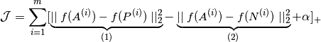
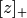
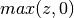

Deep Face detection in WebCam images¶
facedetect-webcam-mtcnn.py¶
Multi-task Cascaded Convolutional Neural Networks (MTCCNN) Face Detection
'''
Created on Sep 9, 2017
@author: inayat
'''
# import the required packages
from imutils.video import WebcamVideoStream
#from imutils.video import FPS
import numpy as np
import argparse
import imutils
import time
import cv2
from utils import FPS2
from utils import mtcnn
from utils import extract_draw_faces
if __name__ == '__main__':
print("[info] starting to read a webcam ...")
capWebCam = WebcamVideoStream(0).start()
time.sleep(1.0)
# start the frame per second (FPS) counter
fps = FPS2().start()
#threshold = [0.6,0.6,0.7]
threshold = [0.3,0.6,0.7]
faceDetector = mtcnn()
# loop over the frames obtained from the webcam
while True:
# grab each frame from the threaded stream,
# resize
# it, and convert it to grayscale (while still retaining 3
# channels)
frame1 = capWebCam.read()
frame = cv2.flip(frame1,1)
#frame = imutils.resize(frame, width=450)
#frame = cv2.cvtColor(frame, cv2.COLOR_BGR2GRAY)
#frame = np.dstack([frame, frame, frame])
# display the size of the queue on the frame
#cv2.putText(frame, "Queue Size: {}".format(fvs.Q.qsize()),
# (10, 30), cv2.FONT_HERSHEY_SIMPLEX, 0.6, (0, 255, 0), 2)
frame, face_imgs, face_bboxes = extract_draw_faces(faceDetector,frame, threshold)
if len(face_imgs) != 0:
face_montages= imutils.build_montages(face_imgs, image_shape=(96,96), montage_shape=(len(face_imgs), 1))
for i, face in enumerate(face_montages):
#print(i)
cv2.imshow("faces montages " + str(i) , face)
fps.update()
cv2.putText(frame, "FPS: {:.2f}".format(fps.fps()),
(10, 50), cv2.FONT_HERSHEY_SIMPLEX, 0.6, (0, 255, 0), 2)
# show the frame and update the FPS counter
cv2.imshow("Face detection using MTCNN", frame)
k = cv2.waitKey(10) & 0xff
if k == 27:
break
# stop the timer and display FPS information
fps.stop()
print("[INFO] elasped time: {:.2f}".format(fps.elapsed()))
print("[INFO] approx. FPS: {:.2f}".format(fps.fps()))
# do a bit of cleanup
cv2.destroyAllWindows()
capWebCam.stop()
Face Registeration¶
registerPersons.py¶
'''
Created on Dec 5, 2017
@author: Inayat Khan
@email: inayatkh@gmail.com
'''
import os
import imutils
os.environ['TF_CPP_MIN_LOG_LEVEL']='2'
#On python3.x cPickle has changed from cPickle to _pickle
import _pickle as cPickle
from keras.models import Model
from utils import faceNetModel
from keras import backend as KB
KB.set_image_data_format('channels_first')
# We can also set the data_format="channels_first" by passing it as an argument to the conv and maxpool layer
from utils import load_weights_from_FaceNet
from utils import loss_triplet
from utils import img_to_encoding
from utils import extract_draw_faces
from utils import mtcnn
#
import cv2
import numpy as np
VERBOSE = True
#import datetime
FACES_IMAGES_PATH = "./images/faces/"
OUT_REG_FACES_PATH = "./images/registeredfaces"
def save_encoded_faces_pickle(images_path,out_pic_file_path, faceNet):
'''
load face images from the images_path, detect faces, encode them and save the results pickle file
'''
threshold = [0.3,0.6,0.7]
faceDetector_mtcnn = mtcnn()
# prepare our registered people data
# assuming images folder contain individual images in subfolders
# each person images are put in corresponding subfolders, and each image of a person contains only face
person_subfolders = []
for p in os.listdir(images_path):
ppath = os.path.join(images_path, p)
if os.path.isdir(ppath):
person_subfolders.append(ppath)
#initial person name label Map
name_label_map = {}
# integer values of each person label
labels =[]
person_image_paths=[]
for i, person_subfolder in enumerate(person_subfolders):
for p in os.listdir(person_subfolder):
ppath = os.path.join(person_subfolder, p)
if p.endswith('jpg'):
person_image_paths.append(ppath)
labels.append(i)
name_label_map[p] = person_subfolder
# now process each person images one by one and encode them using the faceNet model
# we will stored each encodings in face_encodings and their corresponding labels in index dictionary
index_dic = {}
i =0
faces_encoding = None
for image_path in person_image_paths:
debug("encoding face detected in : {}".format(image_path))
image_cv = cv2.imread(image_path, 1)
img_draw, face_imgs, face_bboxes = extract_draw_faces(faceDetector_mtcnn, image_cv, threshold)
cv2.imshow("face image", img_draw)
cv2.imshow("face", face_imgs[0])
if len(face_imgs) == 0:
continue
face_cv = cv2.resize(face_imgs[0], (96,96), interpolation=cv2.INTER_CUBIC)
cv2.imshow("face 96x96", face_cv)
cv2.waitKey(5)
# we have assumed that a single image will have only the face of the person
# compute the encodings
f_encoding = img_to_encoding(face_cv, faceNet)
if faces_encoding is None:
faces_encoding = f_encoding
else:
faces_encoding = np.concatenate((faces_encoding, f_encoding), axis=0)
# save the label for this face in index_dic
# later, this will be used for verification or identification of a person
index_dic[i] = image_path
i = i+1
# save the face encodings and label index dict
np.save(os.path.join(out_pic_file_path,'faces_encoding.npy'), faces_encoding)
with open(os.path.join(out_pic_file_path,'index_dic.pkl'),'wb') as f :
cPickle.dump(index_dic, f)
def debug(msg, msgType="[INFO]"):
'''
the _debug method, which can be used to (optionally) write debugging messages
'''
# check to see if the message should be printed
if VERBOSE:
print("**** {} {} -".format('\033[92m' + msgType + '\033[0m', msg))
if __name__ == '__main__':
np.set_printoptions(threshold=np.nan)
debug("Loading face Net recognition model ....")
faceNet = faceNetModel(input_shape=(3,96,96))
debug(" Total Params of the faceNet model: {}".format(faceNet.count_params()))
'''
FaceNet is trained by minimizing the triplet loss. However, since training
requires a large amount of images and heavy computation.
Therefore, we load a previously trained model
'''
debug("Loading Weights of FaceNet model")
#faceNet.compile(optimizer='adam', loss=loss_triplet(alpha=0.2), metrics=['accuracy'])
faceNet.compile(optimizer='adam', loss=loss_triplet, metrics=['accuracy'])
faceNet=load_weights_from_FaceNet(faceNet)
debug(" weights are loaded from the csv files")
'''
register persons by encoding their faces
'''
debug(" Regitering faces of the person images in {} directory and save the results in {}".format(FACES_IMAGES_PATH, OUT_REG_FACES_PATH))
save_encoded_faces_pickle(FACES_IMAGES_PATH,OUT_REG_FACES_PATH, faceNet)
Face Detection and Recognition in test images¶
recogniseFace.py¶
'''
Created on Nov 24, 2017
@author: inayatullah khan
@email: inayatkh@gmail.com
face verification : is this the claimed person?, it is a one to one matching problem
In general for face verification you are given two images and the objectives is to tell whether they are of
of the same person or not,
'''
# switch off warnings
import os
os.environ['TF_CPP_MIN_LOG_LEVEL']='2'
from keras.models import Sequential
from keras.layers import Conv2D, ZeroPadding2D, Activation, Input, concatenate
from keras.models import Model
from keras.layers.normalization import BatchNormalization
from keras.layers.pooling import MaxPooling2D, AveragePooling2D
from keras.layers.merge import Concatenate
from keras.layers.core import Lambda, Flatten, Dense
from keras.initializers import glorot_uniform
from keras.engine.topology import Layer
from utils import faceNetModel
from utils import load_weights_from_FaceNet
from utils import loss_triplet
from utils import img_to_encoding
from keras import backend as KB
KB.set_image_data_format('channels_first')
# We can also set the data_format="channels_first" by passing it as an argument to the conv and maxpool layer
from utils import load_weights
from utils import mtcnn
#
import cv2
import numpy as np
from numpy import genfromtxt
import pandas as pd
import tensorflow as tf
VERBOSE = True
#import datetime
def debug(msg, msgType="[INFO]"):
'''
the _debug method, which can be used to (optionally) write debugging messages
'''
# check to see if the message should be printed
if VERBOSE:
print("**** {} {} -".format('\033[92m' + msgType + '\033[0m', msg))
def compute_dist_label(reg_faces_encodings, index_dic, test_face_encodings, THRESHOLD=0.7 ):
# Calculate Euclidean distances between face encodings calculated on face dectected
# in test image with all the faces encodings calculated while registering persons
#print("test_face_encodings shape", test_face_encodings.shape)
#print("reg_faces_encodings shape", reg_faces_encodings.shape)
distances = np.linalg.norm(test_face_encodings -reg_faces_encodings , axis=1)
#print("distances shape", distances.shape)
# Calculate minimum distance and index of this face
argmin = np.argmin(distances) # index
minDistance = distances[argmin] # minimum distance
# In general, if two face encodings vectors have a Euclidean
# distance between them less than 0.6 then they are from the same
# person, otherwise they are from different people.
# This threshold will vary depending upon number of images enrolled
# and various variations (illuminaton, camera quality) between
# enrolled images and query image
# We are using a threshold of 0.5
# If minimum distance if less than threshold
# find the name of person from index
# else the person in query image is unknown
debug("minDistance = {} , armin={}, registered face ={}".format(minDistance, argmin, index_dic[argmin]))
if minDistance <= THRESHOLD:
#label = os.path.splitext(os.path.basename(index_dic[argmin]).split('_')[0])[0]
label = os.path.splitext(os.path.dirname(index_dic[argmin]).split('/')[-1])[0]
else:
label = 'unknown'
return (minDistance, label)
if __name__ == '__main__':
np.set_printoptions(threshold=np.nan)
debug("Loading Deep face Net recognition model ....")
faceNet = faceNetModel(input_shape=(3,96,96))
debug(" Total Params of the faceNet model: {}".format(faceNet.count_params()))
'''
FaceNet is trained by minimizing the triplet loss. However, since training
requires a large amount of images and heavy computation.
Therefore, we load a previously trained model
'''
debug("Loading Weights of FaceNet model")
#faceNet.compile(optimizer='adam', loss=loss_triplet(alpha=0.2), metrics=['accuracy'])
faceNet.compile(optimizer='adam', loss=loss_triplet, metrics=['accuracy'])
faceNet=load_weights_from_FaceNet(faceNet)
debug(" weights are loaded from the csv files")
'''
MTCNN face detection
'''
#threshold = [0.6,0.6,0.7]
debug("Loading Deep face Detector (MTCNN) recognition model ....")
threshold = [0.3,0.6,0.7]
faceDetector = mtcnn()
debug("Loading Registered Persons faces encodings and index files generated with registerPerson.py ....")
REG_PERSONS_PATH = './images/registeredfaces'
REG_FACES_ENCODIMGS_FILE = os.path.join(REG_PERSONS_PATH, 'faces_encoding.npy')
REG_FACES_INDEX_FILE = os.path.join(REG_PERSONS_PATH, 'index_dic.pkl')
index_dic = np.load(REG_FACES_INDEX_FILE)
reg_faces_encodings = np.load(REG_FACES_ENCODIMGS_FILE)
test_images_path = './images'
for img_file_name in os.listdir(test_images_path):
img_file_path = os.path.join(test_images_path, img_file_name)
if not os.path.isdir(img_file_path):
test_img = cv2.imread(img_file_path)
test_img_draw = test_img.copy()
thickness = (test_img.shape[0] + test_img.shape[1]) // 300
debug('detecting face in file : {}'.format(img_file_path))
bboxes_shapes = faceDetector.detectFace(test_img, threshold)
for bbox_shape in bboxes_shapes:
if bbox_shape is not None:
top, left, bottom, right = bbox_shape[1], bbox_shape[0], bbox_shape[3], bbox_shape[2]
top = max(0, np.floor(top + 0.5).astype('int32'))
left = max(0, np.floor(left + 0.5).astype('int32'))
#bottom = min(test_img.shape[1], np.floor(bottom + 0.5).astype('int32'))
bottom = min(test_img.shape[0], np.floor(bottom + 0.5).astype('int32'))
#right = min(test_img.shape[0], np.floor(right + 0.5).astype('int32'))
right = min(test_img.shape[1], np.floor(right + 0.5).astype('int32'))
#face_bboxes.append([top, left, bottom, right])
test_face_img = test_img[top:bottom, left:right]
### encoding test_face
test_face_img = cv2.resize(test_face_img, (96,96), interpolation=cv2.INTER_CUBIC)
test_face_encodings = img_to_encoding(test_face_img, faceNet)
dist, identity=compute_dist_label(reg_faces_encodings, index_dic, test_face_encodings, THRESHOLD=0.7 )
#cv2.imwrite(identity+".jpg", test_face_img)
######## drawing faces and labels or person names
start_pt = (left, top)
end_pt = (right, bottom)
for i in range(thickness):
start_pt = (left+i, top+i)
end_pt = (right-i, bottom-i)
cv2.rectangle(test_img_draw, start_pt, end_pt, (255, 255, 0), 1)
for i in range(5, 15, 2):
cv2.circle(test_img_draw, (int(bbox_shape[i + 0]), int(bbox_shape[i + 1])), 2, (0, 255, 0))
person_id_tag = "%s: %.2f" % (identity, dist)
text_end_pt = (left + len(person_id_tag) * 7 , top - 10 )
text_start_pt = (max(left, 10), max(top, 10))
cv2.rectangle(test_img_draw, (left,top), text_end_pt,
(255,255,0), -1, cv2.LINE_AA)
cv2.putText(test_img_draw, person_id_tag, text_start_pt, cv2.FONT_ITALIC,0.4, (0,0,0), 1)
cv2.imshow("face Identification", test_img_draw)
cv2.waitKey()
######################################
Utility Modules¶
facerecog.py¶
This implements the triple loss function.
Created on Nov 28, 2017
@author: Inayatullah Khan @email: inayatkh@gmail.com
In this module the necessary function related to model training are defined.
-
utils.facerecog.loss_triplet(y_true, y_pred, alpha=0.2)[source]¶ Implementation of the triplet loss function, details are explained bellow

Here, the notation  is used to denote 
We want the term (1) to be small where it is the distance between the anchor image encodings “A” and the positive “P” for a given triplet.
We want the term (2) to be relatively large, where it is the squared distance between the anchor “A” and the negative “N” for a given triplet.
 is the hyperparameter called the margin which should be picked manually.
The dafault value is
is the hyperparameter called the margin which should be picked manually.
The dafault value is Arguments:
y_true – true labels, required when you define a loss in Keras, you don’t need it in this function.
y_pred – python list containing three objects:
anchor – the encodings for the anchor images, of shape (None, 128)
positive – the encodings for the positive images, of shape (None, 128)
negative – the encodings for the negative images, of shape (None, 128)
Returns:
loss – real number, value of the loss
mtcnn.py¶
This utility package implements Class mtccnn and Class tools.
Created on Nov 30, 2017
@author: Inayatullah Khan @email: inayatkh@gmail.com
In this utility module some code and ideas are taken from the Keras Implementation of Joint Face Detection and Alignment using Multi-task Cascaded Convolutional Neural Networks MTCCNN.
Which is basically transplanted from MTCNN-caffe from CongweiLin’s <https://github repository
-
class
utils.mtcnn.mtcnn(kao_pnet_weight_path='./models/mtcnn/12net.h5', kao_rnet_weight_path='./models/mtcnn/24net.h5', kao_onet_weight_path='./models/mtcnn/48net.h5')[source]¶ This class implements the MTCNN face detector
-
class
utils.mtcnn.tools[source]¶ This class implements some important functions, which are mainly defined as static methods. These methods or functions are used by the mtcnn face detector
-
static
NMS(rectangles, threshold, type)[source]¶ - Function:
- apply NMS(non-maximum suppression) on ROIs in same scale(matrix version)
- Input:
- rectangles: rectangles[i][0:3] is the position, rectangles[i][4] is score
- Output:
- rectangles: same as input
-
static
calculateScales(img)[source]¶ - Function:
- calculate multi-scale and limit the maxinum side to 1000
- Input:
- img: original image
- Output:
- pr_scale: limit the maxinum side to 1000, < 1.0 scales : Multi-scale
-
static
detect_face_12net(cls_prob, roi, out_side, scale, width, height, threshold)[source]¶ - Function:
- Detect face position and calibrate bounding box on 12net feature map(matrix version)
- Input:
- cls_prob : softmax feature map for face classify roi : feature map for regression out_side : feature map’s largest size scale : current input image scale in multi-scales width : image’s origin width height : image’s origin height threshold: 0.6 can have 99% recall rate
-
static
filter_face_24net(cls_prob, roi, rectangles, width, height, threshold)[source]¶ - Function:
- Filter face position and calibrate bounding box on 12net’s output
- Input:
- cls_prob : softmax feature map for face classify roi_prob : feature map for regression rectangles: 12net’s predict width : image’s origin width height : image’s origin height hreshold : 0.6 can have 97% recall rate
- Output:
- rectangles: possible face positions
-
static
filter_face_48net(cls_prob, roi, pts, rectangles, width, height, threshold)[source]¶ - Function:
- Filter face position and calibrate bounding box on 12net’s output
- Input:
- cls_prob : cls_prob[1] is face possibility roi : roi offset pts : 5 landmark rectangles: 12net’s predict, rectangles[i][0:3] is the position, rectangles[i][4] is score width : image’s origin width height : image’s origin height threshold : 0.7 can have 94% recall rate on CelebA-database
- Output:
- rectangles: face positions and landmarks
-
static
filter_face_48net_newdef(cls_prob, roi, pts, rectangles, width, height, threshold)[source]¶ - Function:
- calculate landmark point , new def
- Input:
- cls_prob : cls_prob[1] is face possibility roi : roi offset pts : 5 landmark rectangles: 12net’s predict, rectangles[i][0:3] is the position, rectangles[i][4] is score width : image’s origin width height : image’s origin height threshold : 0.7 can have 94% recall rate on CelebA-database
- Output:
- rectangles: face positions and landmarks
-
static
facenet.py¶
Created on Nov 24, 2017
@author: inayatkh@gmail.com
The facenet.py module contains code related to faceNet, which follows the inception Deep Net.
A part of these utilities function are taken from OpenFace and its Tensorflow or Keras utilitiies implementation:
-
utils.facenet.img_file_to_encoding(image_cv, model)[source]¶ Encodes a given image to 128 dim vector by passing it to the network model
facenetmodel.py¶
Created on Nov 24, 2017
@author: inayat
fps2.py¶
Created on Sep 9, 2017 @author: inayat (inayatkh@gmail.com)